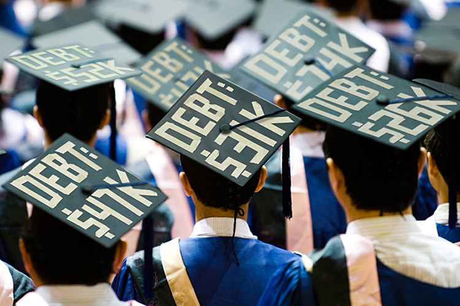

Over the last few decades, the cost of tuition paid by students studying at American colleges and universities has risen to be the highest in the world as well as the highest in American History. Fifty years ago Americans were able to fund their education through part-time work and even today students studying in many European countries pay essentially nothing for a comparable education. So what has driven the rising costs of education in the United States and what should be done to reverse this trend?Additionally, why is it that American students continue to pay a premium for their education and can they continue to do so?
As a student at the University of Maryland, College Park and especially as a student paying out of state tuition the issue at hand is extremely relevant to me. I hope that by exploring this issue I can uncover why the costs associated with college have risen to such a degree in general as well as determine if I have personally made a sound economic decision by deciding to go to college. Many students decide to go to college on the advise of their preceding generation, but the economic picture has changed significantly since our parents were in college.
Students in the United States paid an average of $20,234 during the 2012 to 2013 school year, an increase of 120% in inflation-adjusted costs over the last 30 years.
According to the latest statistics produced by the National Center for Education Statistics, students in the United States paid an average of $20,234 in tuition, fees, room, and board across all types of institutions during the 2012 to 2013 school year. During the 1982 to 1983 school year students paid an average of $9,138 in inflation-adjusted dollars. This represents an increase of over 120% in inflation-adjusted costs over just the last 30 years. The final price-tag on a year of college at public institutions has risen more than 5% faster than it has at private institutions. (Tuition.)
Another way of analyzing how fast tuition has risen is to compare it with other rising costs such as food prices and health-care. According to Michelle Jamrisko and Ilan Kolet of Bloomberg Business, during the same period of time in which the average cost of food rose by %244 and medical expenses grew by %601, tuition and fees skyrocketed by an astounding %1,120. Overall college tuition and fees have grown at a rate four times faster than the rate of inflation as measured by the consumer price index since 1978 (Jamrisko, Kolet).
The burgeoning costs of education at American colleges and universities are leaving a continuously increasing number of graduates with a continuously increasing amount of debt. According to Matthew Reed and Debbie Cochrane of the Institute for College Access & Success, approximately 70% of students who graduated with a bachelor’s degree in 2013 also graduated with an average of $28,400 in student loan debt (Reed, Cochrane). Given how fast tuition prices have risen to unprecedented levels, it is unsurprising that students are taking on unprecedented levels of debt in order to afford an education.
Student debt grew to 1.2 trillion dollars in 2013.
The total debt owed by the American public on their student loans has ballooned into a crisis situation. According to the Consumer Financial Protection Bureau total student debt grew to 1.2 trillion dollars in 2013 and student debt has now become the second largest out of all forms of consumer debt. The largest form of consumer debt is home mortgages. According to Rohit Chopra of the Consumer Financial Protection Bureau over 1 trillion dollars of that debt is Federally held while the remainder is held by private loan agencies. (Chopra)
 Source: http://cdn1.collective-evolution.comStudents studying in Germany, meanwhile, paid exactly nothing for tuition or fees and were responsible only for their living expenses. According to the 2014/15 report on student fees produced by the Eurydice network on education systems, students studying at public universities in France paid a maximum of 189 Euros or about 200 US dollars per year. Students studying at private Universities in Europe (as in the United States) can expect to pay more, however the costs are still significantly less than those faced by students studying at private and even public Universities in the United States. For example, students studying at private institutions in France paid no more than the equivalent of 6,500 USD over the 2014/15 school year. (Natio.)
So why is there such an incredible difference between the cost of earning a degree at a college in the United States versus earning a degree in other developed nations with comparable education systems? European universities are more affordable than those in the United States primarily because of a much more comprehensive system of federal subsidization. However, some argue that the rising costs of a college education in the United States is also due to subsidization by the federal government. As previously stated, the majority of student loan debt is held by the federal government and is heavily subsidized. Getting student loans from the federal government is much cheaper than from private sources and, some argue, may be causing the demand for a college education to rise to levels which are unsustainable by the education marketplace.
Among those who argue that the rising costs of education are a result of government subsidization is Megan McArdle of Newsweek. She opined that by subsidizing student loans we have upset the balance of supply and demand in the education marketplace and thereby caused prices to rise artificially. According to McArdle, “In a normal market, prices would be constrained by the disposable income available to pay them. But we’ve bypassed those constraints by making subsidized student loans widely available.” Ms. McArdle argues that there is an indirect cause and effect relationship between federal subsidization of student loans and tuition and that fewer subsidies would lead to lower overall expenses for college students (McCardle). This oft-repeated argument is known as the “Bennet Hypothesis” because it was first suggested by the then-Secretary of Education William J. Bennet in 1987 (Bennet). However, under closer scrutiny the argument seems to be based on speculation and is refuted by the data that has been gathered on the subject.
David L. Warren, the president of the National Association of Independent Colleges and Universities, gathered the results of a number of studies which refute the notion that there is any correlation between the government subsidization of student loans and the price-tag attached to college tuition. Among the institutions he quoted were the U.S. Department of Education National Center for Education Statistics, the National Commission on the Cost of Higher Education, and the Government Accountability Office all of which had independently come to the conclusion through their gathering of data that there was no evidence of a correlation between the degree of loan subsidization and the raising of the cost of tuition (Warren). If we accept that subsidization does not appear to be directly harmful as an agent of increasing college tuition costs, can we conclude that it is actually beneficial in decreasing those costs?
Before we can do that we must examine whether an increasingly educated workforce is valuable at both the individual and national levels. The traditional view is that a college educated workforce is inherently more valuable than a workforce without a college education, and that at the individual level a college degree is an investment that will pay off in increased lifetime-earning potential. According to an economics paper written in 2014 by Federal Reserve Bank of New York economists Jaison Abel and Richard Deitz a bachelor's degree has consistently generated an average return of %15 since the year 2000. Although tuition has risen faster than inflation while wages have simultaneously been dropping, the situation has been much worse for those without any form of higher education (Abel, Deitz). In short, although the return on investment for a bachelor's has been going down, the costs of not having the degree have increased faster.
“Right now most motivated kids who have the interest and resources to go to college think it’s the only way to go if they want a good job. If those same kids decided to not go to college my guess is they would quickly close the gap.” -James Altucher
Some believe that college has already become more expensive than it is worth. Entrepreneurs such Peter Thiel and James Altucher argue that the rate of return is inflated because college naturally attracts more ambitious people who would have made more money regardless. In a blog post Mr Altucher argues that the opportunity cost of attending college far outweighs the increased earnings potential. “Right now most motivated kids who have the interest and resources to go to college think it’s the only way to go if they want a good job. If those same kids decided to not go to college my guess is they would quickly close the gap.” He further states that merely investing the six figure sums many pay for college would yield a return of over a million dollars, significantly more than the approximately $800,000 lifetime return predicted by the college board. (Altucher)
Peter Thiel, motivated by principles similar to those that James Altucher suggests, has created a fund which pays ambitious would-be-students to forgo college for at least two years and pursue their most ambitious goals. He offers a stipend of $100,000 to about 20 ambitious young adults each year through the Thiel Foundation. According to the Thiel Fellowship website, fellows have created over 100 million dollars in total economic activity through their various pursuits and founded over 58 organizations which currently employ over 200 people. (About.)
Despite the arguments made by Mr Thiel and Mr Altucher, college remains a good investment for the majority of students. The majority of college students, more likely than not, would not have the ambition described by Mr Thiel and Mr Altucher as necessary to offset the penalties the current labor market inflicts on those who lack a college diploma. Overall, an educated workforce is good for the economy and an educated worker tends to fair better financially than their less educated counterparts even as the costs of their education increase. It does seem, however, that we will soon reach a turning point where the education equation stops making sense for a majority of college students. These students will either have taken on an insurmountable amount of debt or will have to make the decision not to attend college.
“All else equal, in theory the increasing price of college over the last forty years should have resulted in fewer people attending. But the exact opposite has occurred: the number of people has increased dramatically.” -Josh Freedman
One option for approaching this dilemma is to let market forces correct the imbalance between supply and demand. Once prices rise (given a simplistic model of the economy) demand should decrease. Unfortunately this likely will not be how the actual market will respond. Josh Freedman, a contributor to Forbes Magazine, discussed in an article the fact that demand for a college education does not decrease when prices rise. In economic terms, demand for education is inelastic. He states that “all else equal, in theory the increasing price of college over the last forty years should have resulted in fewer people attending. But the exact opposite has occurred: the number of people has increased dramatically.” He argues that allowing tuition to rise merely limits access to education for lower income students; it doesn't reduce demand and it won't solve the current student debt crisis. (Freedman)
The other option, which has been successful in Europe for many years, is for the federal and/or state governments to cover the majority of the cost of tuition at public schools. President Obama announced in January that he plans to make tuition at community colleges free for two years. The plan, if approved, would cost of about $6 billion dollars a year to execute as estimated by the White House (Zero). The Federal government, for comparison, spent close to 69 billion dollars across all financial aid programs in 2013 according to the New America Foundation (Federal). And according to the National Center for Education Statistics the tuition charged at all public universities totaled to approximately 53 billion dollars (Tuition). Theoretically, the federal government could afford to cover 100% of tuition costs at public Universities today simply by reallocating the funds it currently spends on it's financial aid programs and it would still have 14 billion dollars left over. This would of course leave many students attending private schools with less funding, but competing with a free alternative might incentive public universities to lower their tuition costs as well.
Although the equation to determine whether the federal government could afford to subsidize all higher education at public colleges and universities is straightforward, there are many confounding factors to be considered. It may be that funding education could have unforeseen and adverse effects on the economy or that any initiative would cost significantly more than this simple estimate suggests. Of course, the issue is very political as well given how many powerful and institutional fingers are in the education honey pot and how many people any changes made would effect. So, should the federal government fully subsidize higher education at public colleges and universities?